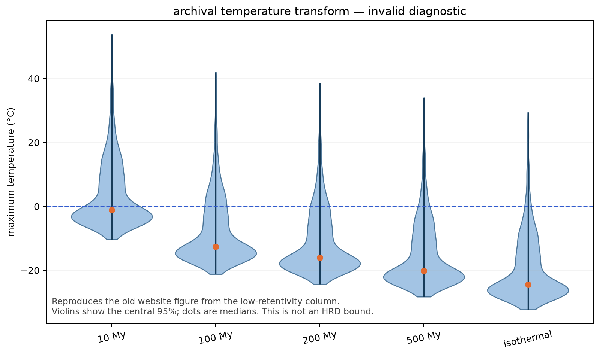

cold Mars analysis
Current status: there is no defensible warm-Mars posterior yet. Jeffrey's memory of a thousands-of-chains, eight-H100 experiment is supported by the 2026 workflow. Its raw outputs are not in either clone, however, and the committed summaries do not establish convergence. The +42°C website figure came from a separate 2025 run with severe mixing and domain-ordering problems.
run inventory
| lineage | what ran | what was retained | what survives here | assessment |
|---|---|---|---|---|
| 2025 notebook | 1,000 chains; 1,000 warmup steps; 100 NUTS steps | Warmup endpoint plus all 100 subsequent draws: shape 101 × 1000 × 2. This was not terminal-state-only sampling. |
Tracked pickle, notebook, KDE animations, and a NumPy copy. | Not mixed. Maximum rank-normalized/folded split R̂ reaches 12.0. This artifact produced the first comet and +42°C plot. |
| 2026 H100 workflow | Eight GPU processes. Standard D3/D4 jobs used 100 chains/GPU; another launcher requested 1,000/GPU. | One terminal state after each 1,000-step adaptation block; nominally 100 endpoints/chain. | Scripts and prose summary only. Result pickles and scheduler logs were ignored and are absent. | Your memory matches this lineage. But D3/D4 report R̂ 1.78/1.67; N2/N3 report 1.00 only after learning very large noise, and N3 collapses domains. Repeated adaptation also makes these endpoints questionable as stationary draws. |
| 2026 diagnostic | Eight ordered two-domain chains. | Ordinary post-warmup NUTS draws from a fixed kernel. | Code, diagnostics, and the replacement comet video. | Useful code diagnostic: R̂ 1.003, bulk ESS >2,300, zero divergences. Too few chains for the intended experiment and not evidence for a flexible grain-size distribution. |
why the +42°C plot is invalid
- The 2025 notebook sorted each chain's final domains by descending
log(D₀/r²). Column 0 therefore became the faster, low-retentivity domain. - The later temperature code treated column 0 as the high-retentivity domain. That ordering mismatch exactly reproduces the website's 100 My result: median −12.66°C, central 95% interval [−21.21, 41.99]°C.
- The actual column-1 transform is not a rescue. Its 100 My central 95% interval is [−20.72, 312.00]°C because pathological chains dominate the upper tail.
- The transform only varies excursion duration. A valid thermal-history calculation must also represent when the event occurs and the radiogenic argon produced after it.

archival convergence check
| parameter | low-retentivity domain max R̂ | nominal high-retentivity domain max R̂ | threshold |
|---|---|---|---|
Eₐ | 7.92 | 7.35 | ≈1.01 |
log(D₀/r²) | 6.96 | 5.59 | ≈1.01 |
φ | 12.00 | 11.89 | ≈1.01 |
Rank-normalized and folded split R̂, computed across the 1,000 chains after discarding the stored warmup endpoint. No divergence, tree-depth, acceptance-rate, or energy diagnostics were stored with this artifact.
additional model issues to settle
- The 2025 notebook has its written priors commented out, except for a negative-activation-energy penalty.
- Its comet animation applies a likelihood weight to samples that were already drawn from the posterior, effectively weighting the likelihood twice.
- The 2026 likelihood renormalizes predicted release over the filtered laboratory steps while the corresponding observed fractions retain their whole-experiment normalization. This needs a single, explicit observation-window definition.
- The 2026 learned-noise fits can obtain good R̂ for a posterior whose effective observation uncertainty is roughly 5.5×–8.7× the input uncertainty. Convergence does not make that measurement model appropriate.
- Neither available run demonstrates the originally proposed continuous or otherwise richly distributed diffusion-domain model.
what is missing
The 2026 scripts wrote results under /home/jefcheng/dev/martiandating/results on the cluster. That directory's pickles and logs are ignored by Git and do not exist in this workspace. Without them, we cannot verify the reported chain counts, retained arrays, sampler diagnostics, or whether a later Claude session modified only plots, reran samplers, or changed the target density.
recovery targets
fit_D3_gpu*.pklandfit_D3_combined.pklfit_D4_gpu*.pklandfit_D4_combined.pkl- N2/N3 result pickles
slurm_*.logand per-GPU logs- scheduler job metadata and code checkout SHA, if available
next experiment: acceptance criteria
- Freeze the scientific target first: data rows, normalization, uncertainty model, activation-energy treatment, domain representation, and thermal-history parameterization.
- Adapt each chain once, freeze the NUTS kernel, and then retain ordinary post-warmup draws. Save the full draws or a justified thinning—not endpoints of repeated adaptation windows.
- Distribute many independently initialized chains across all eight GPUs and record the exact code commit, random seeds, device mapping, and sampler configuration.
- Save divergences, tree depth, acceptance probability, step size, inverse mass matrix, energy diagnostics, rank-normalized split R̂, and bulk/tail ESS.
- Inspect per-chain and rank plots before making a comet animation. The animation should depict the unweighted posterior draws, never a second likelihood weighting.
- Run posterior predictive checks against the measured incremental release fractions in the exact observation window used by the likelihood.
- Propagate each accepted draw through a thermal-history model that includes excursion timing, duration, diffusion during the event, and post-event radiogenic regrowth.
- Use violins with median and central 95% markers for the final temperature summary, accompanied by chain diagnostics and posterior-predictive evidence.
decisions before compute
- Can the ignored cluster result directory still be recovered?
- Is the target a discrete 2/3/4-domain MDD model, a continuous distribution over diffusion scales, or a comparison among both?
- Should activation energy be fixed, shared and inferred, or domain-specific?
- Which extraction steps belong in the likelihood, and should their release fractions be renormalized after filtering?
- What warm-event timing prior should replace the duration-only maximum-temperature transform?